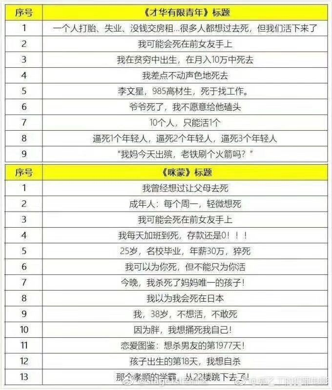

回复@资本暴利狂徒:控制好仓位。目前计划里面的500仓位很合适。一个组合里面，大中小指数配置都不能太多，合适就是最好的。//@资本暴利狂徒:E大别理那些傻子，大过年的，讲点开心的，我明天就买三车500@ETF拯救世界:从现在开始，谁再没完没了的问500直接拉黑。担心你就卖掉，不担心就拿着这不到15%的仓位等风来。什么都不懂就去研究，看谁说不好就找谁报团儿去。跟这么一帮人做队友一起打仗真是见鬼了。
截至今日，有295家中证500成分股公布业绩预报。以上限计算，有181家业绩预增，增幅中位数50%。有114家预减，预减幅度中位数83%。主要原因为有50家公司预减100%以上。500是一个分布极其平均的指数，占比最大的成分股占指数配比为0.6%。第十位只有0.4%，大部分公司占比不到0.3%。目前PE18倍，PB1.5倍。我请你们记住这些数字，以及那些目前看衰500的大V和吃瓜群众。你在他们那里，虽然看不到任何客观数据。但你可以看到情绪以及视野。
回复@陈中围脖:大家是谁？你要在股市和大家都想法一样了，那你得多平庸啊//@陈中围脖:看球球上，大家把500说的一文不值....//@ETF拯救世界:转发微博@张道达:【年报业绩预告即将收官 沪市公司逾九成盈利】1月31日是年报业绩预告截止日，截至此时，沪市有近550家公司披露了2018年度业绩预告，其中预增、预盈公司约310家，预减公司约130家，预亏公司约110家。扣除本次预亏的公司，沪市仍有约1350家左右实现盈利，占比90%以上。总体看，2018年上市公司受整体经济环境影响，预亏预减公司相较去年有所增加，但沪市公司整体业绩仍然保持平稳。（上证报）
转发微博@张道达:【年报业绩预告即将收官 沪市公司逾九成盈利】1月31日是年报业绩预告截止日，截至此时，沪市有近550家公司披露了2018年度业绩预告，其中预增、预盈公司约310家，预减公司约130家，预亏公司约110家。扣除本次预亏的公司，沪市仍有约1350家左右实现盈利，占比90%以上。总体看，2018年上市公司受整体经济环境影响，预亏预减公司相较去年有所增加，但沪市公司整体业绩仍然保持平稳。（上证报）
有没有人告诉我为什么现在的人喜欢看这些东西。@stage1st宅社区:咪蒙真是肥宅的快乐杯。我，38岁，不想活，不敢死。我每天加班到死，存款还是0。今晚，我杀死了我妈妈唯一的孩子。我曾经想过让我父母去死。我以为我会死在日本。结果因为胖，我捅死我自己。名校毕业，年薪30万，猝死。那个孝顺的学霸，从22楼跳下去了！ 
回复@愿赌服输K:因为我遵守规则。这也是我开开心心在市场里活着的原因。//@愿赌服输K:不是抬杠啊…既然知道今天拉伸的概率大，为啥没有昨天发车呢…是因为今天要买的品种昨天买不确定性很大吗？//@ETF拯救世界:人生的无奈就是知道的太多。心累。@ETF拯救世界:正常的市场本来就应该有几百块的股票，也应该有大量几毛钱甚至几分钱的股票。频繁爆雷，频繁跌停都是正常现象。
人生的无奈就是知道的太多。心累。//@ETF拯救世界:回复@某同学321:1-2，明天中午吧。明天大概率拉升，不过一两车问题不大。//@某同学321:E大，这次发几车呀//@ETF拯救世界:回复@小狗上马路:别嘴炮。让看空的把做空IC的图贴上来。@ETF拯救世界:正常的市场本来就应该有几百块的股票，也应该有大量几毛钱甚至几分钱的股票。频繁爆雷，频繁跌停都是正常现象。
新闻和传媒，只会报道那些“不寻常”的事。有人为了抓眼球，有人为了其他的目的。洗澡的，爆雷的有没有。有。有多少，现在还不知道。有没有全部上市公司的10%？很难。现在两市3600家公司，有没有360家爆雷？冷静点。理智点。独立思考。
回复@w__rain:十几个点的仓位还用不着这么打气。踏实点。//@w__rain:如今商誉减值，中证500的pb一下子应该高出一大截吧，所谓跌着跌着，估值就高了。看来中证500还没走到下跌的尽头，还有很大的下跌空间，我们不要悲观啊。@ETF拯救世界:标普500pb大概是3倍多一点。纳斯达克100大概是5倍多一点。英国100两倍多。印度3倍。中证500即将跌破1.5倍（历史最低1.3x）。连传媒都1.8了。我其实很好奇，这么洗传媒年报出来会怎样……
有没有加快。不出什么问题的话后续工作还会更快//@ETF拯救世界:回复@骑烤猪的星星:想多了。很明显领导对上一任直接融资这一块很不满意。CDR搁浅，科创迟迟没有进展。可以预见，未来直接融资规模将快速扩大，各项工作推进速度也将加快。@ETF拯救世界:我个人认为，就我所经历的几位，尚、郭、肖、刘，都挺好。肯定是有不足，但关键是，很多事情真不是他们能决定的。这个位置真的很难。几位还都是做了事情的。个人感觉，这个位置比足协主席难太多了。足协主席很多事情干不好那真是该骂……